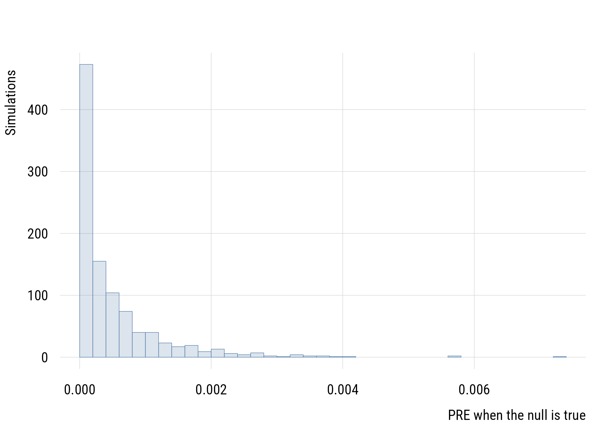
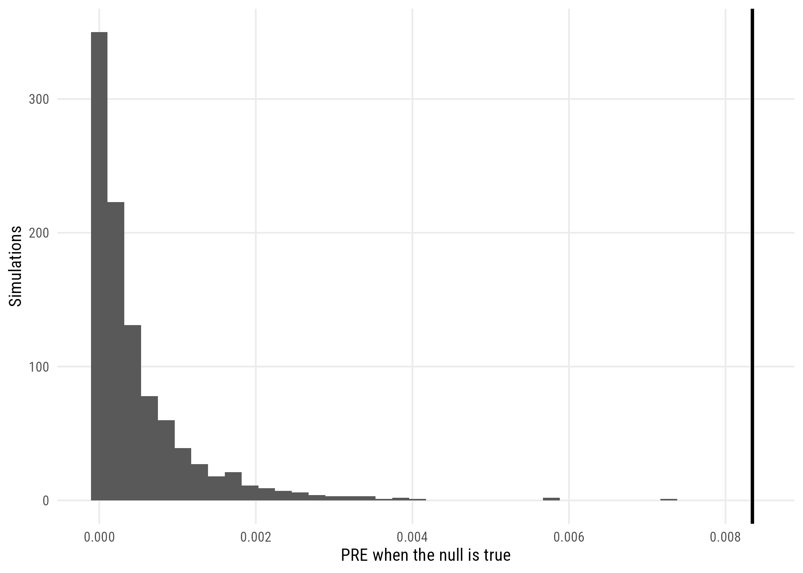

gss <- readRDS(here::here("data", "gss2024.rds")) |>
haven::zap_labels()
tv <- gss$tvhours[!is.na(gss$tvhours)]6 Hypothesis testing
We’re going to look at testing null hypotheses. The confidence interval of Chapter 5 is closely linked to the idea of the hypothesis test, which uses the sample data to test if there is enough evidence to assert that the population differs from some specific reference value. That reference value is called the null hypothesis.
6.1 Setting up the null model
Null hypothesis: the average American adult in 2024 watched 3 hours of TV per day. By subtracting 3 from the observed value, we can make it so the null hypothesis is 0. That makes it easy to use lm(y ~ 0) to set up the null model that tests whether the mean of tvhours is different from 0.
In the language of Chapter 4, that null model is model C. Model A spends a parameter to estimate the mean.
d <- data.frame(tvdev = tv - 3)
m_c <- lm(tvdev ~ 0, data = d) # assume the mean is 3
m_a <- lm(tvdev ~ 1, data = d) # allow the mean to be different from 3
observed_pre <- (deviance(m_c) - deviance(m_a)) / deviance(m_c)
observed_pre[1] 0.008343581The SSE is improved by estimating \(\beta_0\), but was it improved more than we’d expect by chance?
6.2 Creating a null distribution
Here’s a quick example where we make data where the null hypothesis is actually true. Then we can use it to check whether we could get numbers as large as we see in the real data by chance variation alone. We can use rnorm() to make fake data with a given mean and SD.1
1 We could create a better null distribution here by using a different distribution than the normal for our fake tvhours data. As you saw earlier the data itself is actually NOT normally distributed. We could use a count distribution but we’re not ready for that! We’ll talk about that more in Chapter 17.
set.seed(522)
n_tv <- length(tv)
sd_tv <- sd(tv)
calc_null_pre <- function() {
null_data <- tibble(tvdev = rnorm(n_tv, 0, sd_tv))
m_c <- lm(tvdev ~ 0, data = null_data)
m_a <- lm(tvdev ~ 1, data = null_data)
pre <- (deviance(m_c) - deviance(m_a)) / deviance(m_c)
return(pre) # this returns the observed PRE from that simulation
}
null_sims <- tibble(sim_number = 1:1000) |>
rowwise() |>
mutate(pre = calc_null_pre())6.3 The test
The idea is to compare the real world to the world implied by the null hypothesis. So we’ll show how the observed PRE compares to the distribution of PREs we got from fake data where the null hypothesis is true.
plt(~ pre, data = null_sims, type = "hist", breaks = 40,
xlab = "PRE when the null is true", ylab = "Simulations")
abline(v = observed_pre, lwd = 2)
ggplot(null_sims, aes(x = pre)) +
geom_histogram(bins = 40) +
geom_vline(xintercept = observed_pre, linewidth = 1) +
labs(x = "PRE when the null is true", y = "Simulations")
The solid line shows that the observed PRE is way higher than we’d expect to get by chance. This gives you the intuition for what the F-test is trying to accomplish in an “analytic” way (i.e., by math alone, not by simulation).
What F would that be equivalent to?
fstat <- (observed_pre / 1) / ((1 - observed_pre) / (n_tv - 1))
c(F = fstat, critical_F = qf(.95, 1, n_tv - 1), p_value = 1 - pf(fstat, 1, n_tv - 1)) F critical_F p_value
1.809805e+01 3.845786e+00 2.188091e-05 The critical value is the 95th percentile F-statistic we’d expect to get by chance if the null hypothesis is true. The observed value is way higher than that. The formula-based approach and the simulation have the same basic logic and the same conclusion. Remember that there is nothing sacred about 95% or 99% or any of that.
In any case, we will be rejecting the null hypothesis here!
NoteWhat a simulation can and can’t resolve
The simulated p-value bottoms out at 0, because with 1,000 simulations the smallest non-zero value you can observe is 1/1000. The analytic p-value is far below that. A simulation can’t resolve a probability much smaller than one over the number of simulations, which is a practical reason analytic results are worth having.
6.4 The z-score route
We can approach this issue more generally through z-scores, exactly as in Chapter 5. How “weird” is our result? How many standard errors is it away from the expected value of the null distribution?
se_tv <- sd(tv) / sqrt(n_tv)
z_tv <- (mean(tv) - 3) / se_tv
c(se = se_tv, z = z_tv, p_value = 2 * (1 - pnorm(abs(z_tv)))) se z p_value
7.110872e-02 4.254180e+00 2.098166e-05 That probability is called the p-value of the test.
R will do the whole thing at once. Because we estimated \(\sigma\) from the data rather than knowing it, the correct reference distribution is the \(t\) distribution rather than the normal, which we take up in Chapter 7. At this sample size the difference is invisible.
t.test(tv, mu = 3)
One Sample t-test
data: tv
t = 4.2542, df = 2151, p-value = 2.188e-05
alternative hypothesis: true mean is not equal to 3
95 percent confidence interval:
3.163060 3.441958
sample estimates:
mean of x
3.302509 6.5 Tails and tests
Why are we using the left and right sides? Why not just use the right side and halve the p-value? After all, it is true that we’d only expect to get a value as large as ours that much of the time.
The use of two-tailed tests rather than one-tailed tests is ubiquitous in sociology. It’s regarded as “conservative” even though there is usually not a good rationale for it.
6.6 Alpha level
How do we connect these ideas to a hypothesis test? To conduct a hypothesis test, we need an alpha level (or \(\alpha\) level). This is the proportion of the time we’re willing to falsely assert that the observed data did not come from the null distribution. This is connected to the idea of type-I error or the idea of a false positive.
We’re now ready for the algorithm of the hypothesis test:
- Choose an alpha level (say, .05)
- Calculate the observed sample statistic
- Calculate the absolute difference between the statistic and the expected value under the null
- Convert this difference into a z-score using the SE of the sampling distribution
- Convert the z-score to a p-value
- If the p-value is less than alpha reject the null hypothesis; if the p-value is greater than alpha fail to reject the null hypothesis
Sometimes people write a hypothesis test out formally. Here’s an example.
\[H_0 : \mu = 3 \qquad H_1 : \mu \neq 3\]
6.6.1 Rejecting (or not) the null
This language can feel weird. We can never accept the null hypothesis (\(H_0\)), in part because the probability of an exact value (e.g., 3) being true is basically zero. So we can only either reject the null hypothesis or fail to reject it.
When we reject the null hypothesis, we call a result statistically significant. That’s literally all that phrase means!
6.6.2 Conventional alpha levels
The conventional alpha level for a test is .05. Heuristically speaking, this means we’re willing to falsely reject the null hypothesis 5% of the time. This value is by no means sacred. In fact, it is fundamentally arbitrary.
Just as we saw with confidence intervals, we can pick any value we like, which is both liberating and scary!
Among widowed respondents, is a majority afraid to walk alone at night in their own neighborhood?
wid <- gss |>
filter(marital == 2, !is.na(fear)) |>
mutate(afraid = as.numeric(fear == 1))
p_wid <- mean(wid$afraid)
n_wid <- nrow(wid)
z_wid <- (p_wid - 0.5) / sqrt(0.25 / n_wid)
c(n = n_wid, p_hat = p_wid, z = z_wid,
p_value = 2 * (1 - pnorm(abs(z_wid)))) n p_hat z p_value
176.00000000 0.41477273 -2.26133508 0.02373852 At \(\alpha = 0.05\) we reject the null. At \(\alpha = 0.01\) we don’t. The data are identical; only the threshold moved.
6.7 A test that does not resolve
Do a majority of never-married Americans favor the death penalty for murder? Here \(H_0: p = 0.5\) is a meaningful null, since it’s the line between a majority and a minority.
nm <- gss |>
filter(marital == 5, !is.na(cappun)) |>
mutate(favor = as.numeric(cappun == 1))
p_nm <- mean(nm$favor)
n_nm <- nrow(nm)
z_nm <- (p_nm - 0.5) / sqrt(0.5 * 0.5 / n_nm)
c(n = n_nm, p_hat = p_nm, p_value = 2 * (1 - pnorm(abs(z_nm)))) n p_hat p_value
650.0000000 0.5215385 0.2720952 We fail to reject. A sample majority of this size, with this many respondents, is entirely ordinary in a population split down the middle. Note what we have not concluded: not that support is 50%, only that our data can’t distinguish 50% from what we observed.2
2 The standard error here uses \(p_0 = 0.5\), the null value, rather than the observed \(\hat{p}\), because the whole calculation happens inside the world where the null is true. A confidence interval uses \(\hat{p}\) instead, since it isn’t committed to any particular null.
6.8 p-values and confidence intervals
There is a close relationship between p-values and confidence intervals. For example, if a 95% confidence interval includes the null value, the p-value of the hypothesis test will be above .05.
t.test(tv, mu = 3)$conf.int[1] 3.163060 3.441958
attr(,"conf.level")
[1] 0.95Since this interval does not include 3, we could decide to reject the null hypothesis on that basis.
In fact, because p-values and CIs can both be used for testing, it’s usually better to use CIs because they convey the uncertainty of the estimate as well.
6.9 p-value pitfalls
People sometimes say and do stupid things with p-values. Here are some tips:
- Don’t use asterisks as informal indicators of “how big” an effect is (do you have an alpha level or not?)
- Don’t mistake “statistical significance” for importance
- Don’t test many things and report the interesting ones. At \(\alpha = 0.05\), one test in twenty clears the bar by chance
- When assessing the plausibility of a hypothesis, you need to know the prior probability of the hypothesis as well as the p-value
6.10 Recap
- a hypothesis test is a model comparison: \(H_0\) fixes a value (model C), \(H_1\) estimates one (model A)
- the p-value is the probability of data at least as extreme as ours given that the null is true
- simulating the null world and computing the p-value analytically give the same answer, up to the resolution of the simulation
- alpha is fundamentally arbitrary
- statistically significant means only “p below threshold”
- a confidence interval contains exactly the nulls a test would not reject